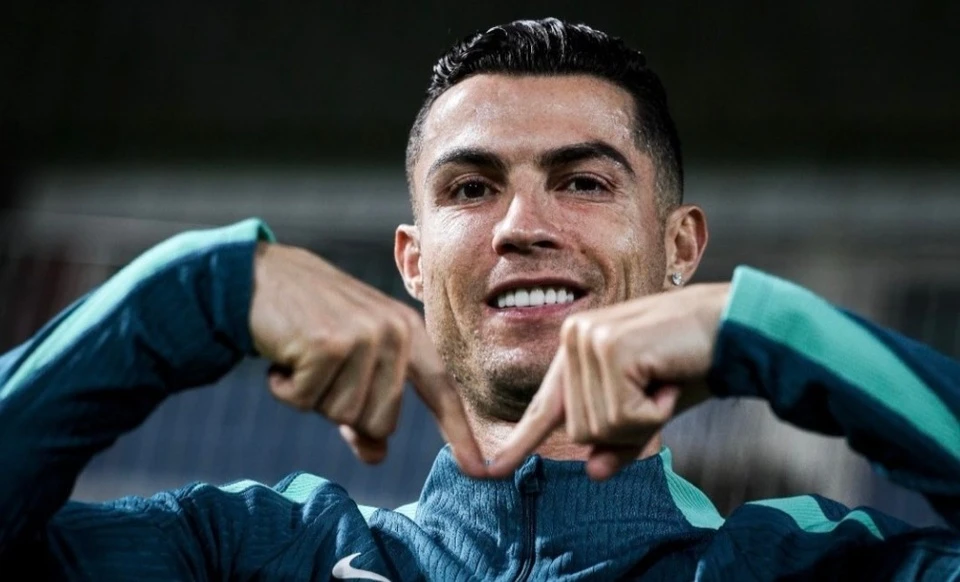
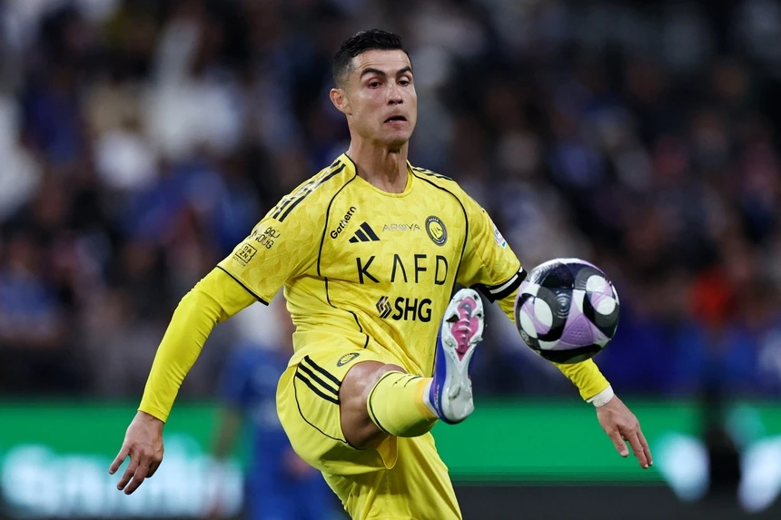

Ronaldo vẫn thi đấu bền bỉ dù sắp 41 tuổi.Dù chuẩn bị bước sang tuổi 41, siêu sao người Bồ Đào Nha tiếp tục khiến giới chuyên môn lẫn người hâm mộ kinh ngạc không chỉ bởi phong độ thi đấu, mà còn bởi thể trạng gần như không đổi so với thời đỉnh cao. Đằng sau đó là chế độ sinh hoạt và tập luyện kỷ luật đến mức khắt khe.
Theo chia sẻ từ Georgina Rodriguez, vợ sắp cưới của Ronaldo, mọi ngày của CR7 đều bắt đầu từ rất sớm. CR7 thức dậy lúc 6 giờ sáng để khởi động ngày mới bằng các bài tập thể chất. Ronaldo đặc biệt chú trọng việc bổ sung nước ngay sau khi thức dậy.
Sau buổi tập đầu tiên, Ronaldo dành thời gian nghỉ ngơi để cơ bắp phục hồi trước khi nạp năng lượng. Bữa sáng của anh không cầu kỳ nhưng được tính toán kỹ lưỡng, gồm trái cây tươi, trứng và phô mai. Đây là những thực phẩm giàu protein và dưỡng chất cần thiết cho việc duy trì khối cơ.

Ronaldo có lịch tập luyện khắc nghiệt. Ảnh: Reuters.Khoảng một tiếng rưỡi sau, Ronaldo quay trở lại phòng gym cho buổi tập chính trong ngày. Buổi tập tạ kéo dài khoảng 2 tiếng là phần quan trọng nhất trong lịch trình. Ronaldo tập trung vào sức mạnh, độ dẻo dai và sự cân bằng của toàn bộ cơ thể.
Các bài tập được luân phiên nhằm tránh quá tải, đồng thời giúp từng nhóm cơ phát triển đồng đều. Sau khi hoàn tất, anh lại dành thời gian nghỉ ngơi, coi phục hồi là một phần không thể thiếu của quá trình rèn luyện. Buổi chiều, Ronaldo giảm cường độ vận động để thư giãn bên gia đình hoặc bạn bè. Khoảng thời gian này giúp anh giải tỏa áp lực tinh thần, yếu tố thường bị bỏ qua nhưng lại đóng vai trò lớn trong việc duy trì phong độ lâu dài.
Trước khi đi ngủ, CR7 còn thực hiện thói quen đặc biệt là bơi lội. Với anh, bơi không chỉ là hình thức thư giãn mà còn là cách thả lỏng cơ bắp, giúp cơ thể bước vào giấc ngủ trong trạng thái tốt nhất. Chính sự kỷ luật tuyệt đối, kết hợp giữa tập luyện, dinh dưỡng và nghỉ ngơi khoa học, giúp Ronaldo duy trì cơ bắp ấn tượng suốt nhiều năm. Đó là bí quyết giữ gìn vóc dáng, phản ánh tinh thần chuyên nghiệp và khát khao chinh phục không giới hạn của một trong những cầu thủ vĩ đại nhất lịch sử bóng đá.